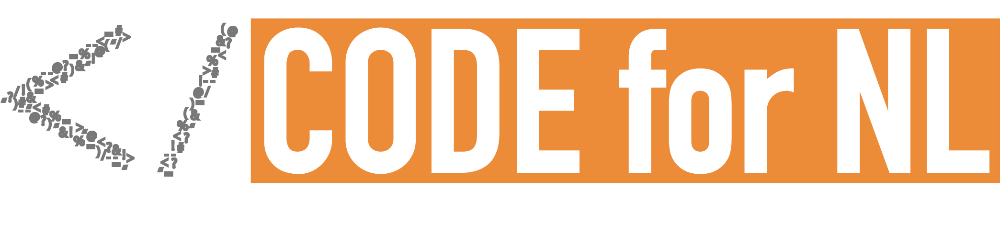
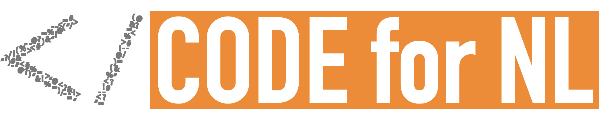

Samen kom je verder
Het team van het Ministerie van Volksgezondheid, Welzijn en Sport dat de CoronaMelder app ontwikkelt, wordt ondersteund door een groot aantal vrijwilligers en externen. Iedereen kan meedoen; jouw mening en expertise wordt op prijs gesteld en kan het verschil maken!
Aankomende activiteiten
Open ontwikkeling
Draag ook bij aan de kwaliteit van CoronaMelder
De ontwikkeling van CoronaMelder gebeurt in alle openheid. Dit betekent dat de code en ontwerpen van de app voor iedereen zichtbaar zijn.
Honderden vrijwilligers geven hun mening en suggesties voor de (door) ontwikkeling van CoronaMelder. Waaronder designers, ontwikkelaars, testers, mensen uit belangenverenigingen, juristen, wetenschappers, epidemiologen, communicatieadviseurs en toegankelijkheidsexperts.
Dit maakt de app veiliger, gebruiksvriendelijker en beter. En het vergroot het vertrouwen in de app: iedereen met de juiste kennis kan de werking precies controleren.
Wil je nog eens teruglezen hoe de app is ontstaan? Bekijk dan deze achtergrondartikelen over:
- Open ontwikkeling van de app
- Privacy en veiligheid
- Het open ontwerppoces
- Hoe maak je je project open? Tips en stappen

Bekijk de code en de ontwerpen
De app is open-source
Het ontwerp is in Figma (een online ontwerptool) na te slaan- je kon live zien hoe ontwerpen ontstaan en veranderen, en je kon er direct feedback geven op ontwerpen. De app is ‘open source’ ontwikkeld: de broncode van de app is door iedereen te bekijken, te testen en te verbeteren via GitHub.
Repositories
Naar het GitHub account van VWS
Praat mee
Ga direct in gesprek met het CoronaMelder team en andere geïnteresseerden via de CodeForNL Slack community.
Slack is een chatplatform waarmee je eenvoudig en open over verschillende onderwerpen met elkaar praat.
Stichting Code for NL is de Nederlandse community van developers en designers die samenwerken aan een open, eerlijke, en inclusieve digitale overheid en samenleving. Het CoronaMelder project is te gast bij de Code for NL community op Slack. Code for NL is niet direct aan het project verbonden.
De CoronaMelder community streeft een vriendelijke, constructieve en respectvolle sfeer na. Er is alle ruimte voor verschillende meningen.
Let op: naast de kanalen met het #coronamelder voorvoegsel zul je ook
andere kanalen zien die niet gerelateerd zijn aan dit project. Uiteraard ben
je ook in die kanalen welkom.
 

Bedankt!
Deze mensen helpen ons vrijwillig om de app beter, veiliger en gebruiksvriendelijker te maken. Dank!
Deze app kan helpen om mensen in Nederland weer gezonder, voorspoediger en vrijer te laten leven. Jullie bijdragen maken daarbij een groot verschil. We willen in het bijzonder deze mensen bedanken die belangeloos bijdragen (in alfebetische volgorde):
- Aldert Greijdanus
- Aleksander Okonski
- Amin Kadhim
- Anouschka Scholten
- Arian van Putten
- Bart Nieuwenhuis
- Bart van de Biezen
- Bart van Riessen
- Benjamin W. Broersma
- Bert Hubert
- Christine Karman
- Damiët Groen
- David Stotijn
- Dirk Groten
- Edwin van de Bospoort
- Eloy Durán
- Elsje van de Kraats
- Eva van Sloten
- Fouad Astitou
- Franklin van Velthuizen
- Harrie Kuipers
- Henry van der Wal
- Ivonne Jansen-Dings
- Jan Wind
- Jelle Licht
- Joost van der Ree
- Jorn de Vries
- Joshua Lückers
- Kaj Oudshoorn
- Kevin Mol
- Lennert Dorman
- Luc van Loon
- Maarten Steen
- Martine Veldhoen
- Matthijs Blaauw
- Mesbah Sabur
- Michel de Meere
- Naman Mathur
- Oliver Lukman
- Patrick Vos
- Paul Wagener
- Pieter-Pleun Korevaar
- Rene Honig
- Revi Körnmann
- Reynout van der Poel
- Rob Hulst
- Ron van den Berg
- Rob Voets
- Salim Hadri
- Sander van Hulst
- Sebastian Wachholz
- Sebass van Boxel
- Stefan van de Weijer
- Thomas Visser
- Tijl Houtbeckers
- W. Koot
- Willem Dekker
- Yvo Hunink
- Zino Hofmann
Onze dank gaat ook uit naar alle mensen die geholpen hebben, maar hier liever niet genoemd wilden worden.
Tot slot een bijzondere dank aan het hele team van PrivateTracer. Grote delen van de code van dit vrijwillige initiatief zijn gebruikt voor de CoronaMelder en verschillende mensen in het team van het Ministerie van VWS komen uit dit initiatief. Op verzoek van PrivateTracer staan de teamleden hier niet individueel genoemd, maar you know who you are. Dank!
Missen er mensen in deze lijst? Voeg ze graag toe via een pull request of contacteer Edo Plantinga via Slack. Voel je vooral vrij om je eigen naam toe te voegen.
Voeg vrijwilligers toe aan deze paginaOmgangsregels
Voor een prettige samenwerking stellen we een paar basisprincipes
We hopen voor iedereen een welkome en inclusieve sfeer te bouwen. Hiervoor stellen we een aantal beloftes en standaarden in onze gedragscode, ook wel bekend als een Code of Conduct.
Naar de Code of Conduct
Deel deze pagina